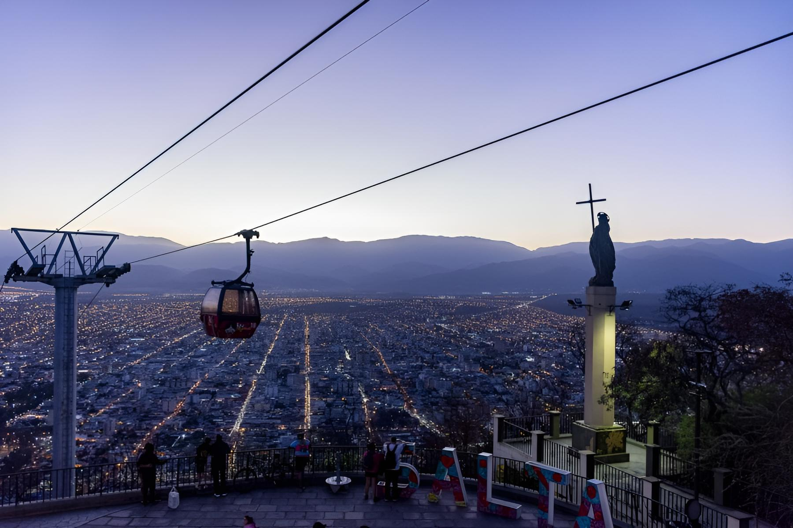

Salta, la linda
Una ciudad que mezcla historia, paisajes y esa calidez que te hace sentir como en casa.
Apenas llegás a Salta entendés por qué le dicen “la linda”. Las montañas que la rodean, el clima templado y la arquitectura colonial crean una mezcla única. Sus calles parecen detener el tiempo: balcones antiguos, iglesias coloridas y gente que te saluda sin conocerte.
Uno de los lugares que más me gustó fue el Cerro San Bernardo. Subí en teleférico y desde arriba se puede ver toda la ciudad, una vista increíble especialmente al atardecer. También recomiendo recorrer la Plaza 9 de Julio, el corazón de la ciudad, con sus cafés, museos y la majestuosa Catedral.
Si te gusta la historia, no podés dejar de visitar el Museo de Arqueología de Alta Montaña, donde se conservan los famosos niños del Llullaillaco. Es impactante y emocionante a la vez. Y si sos fan de la comida, los salteños y las empanadas son un viaje en sí mismos. Te prometo que nunca vas a volver a mirar una empanada igual.
Lo mejor de Salta es que, además de la ciudad, tenés muchísimos lugares cerca para conocer: Cafayate, Cachi, San Lorenzo... Cada uno con su propio encanto. Sin duda, es un destino que invita a volver, y cada vez que lo hacés descubrís algo nuevo.
← Volver a Categorías